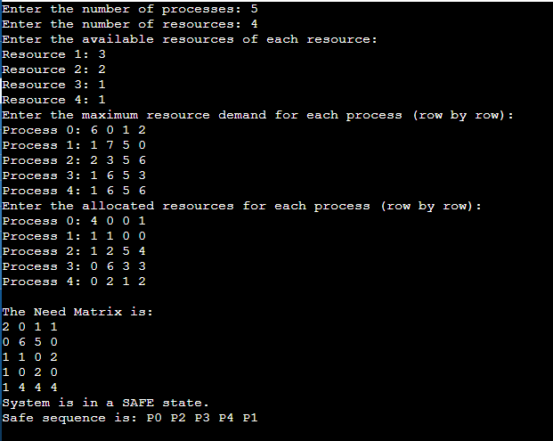

Overview
Banker's Algorithm is a deadlock avoidance algorithm that is used in operating systems to ensure that resource allocation does not lead to deadlock. It is named "Banker's Algorithm" because it is analogous to the way a banker might allocate resources (loans) in such a way that all clients (processes) can eventually finish their tasks (repay their loans) without causing any deadlock. Here's an overview of how it works:
Key Concepts
- Processes and Resources: The algorithm deals with multiple processes that require a variety of resources to execute.
- Safe State: A system is in a safe state if there exists a sequence of processes such that for each process, the resources it still needs can be satisfied by currently available resources plus the resources held by all previous processes in the sequence.
- Resource Allocation: The algorithm checks if allocating the requested resources will leave the system in a safe state. If so, the resources are allocated; otherwise, the process must wait.
Steps of the Algorithm
- Data Structures: The algorithm uses several key data structures:
Available: A vector of lengthmthat indicates the number of available resources of each type.Max: Ann x mmatrix that defines the maximum demand of each process for each resource.Allocation: Ann x mmatrix that shows the current allocation of resources to each process.Need: Ann x mmatrix that indicates the remaining resource needs of each process.
- Safety Check: When a process requests resources, the algorithm simulates the allocation to check if the system remains in a safe state:
- Temporarily allocate the resources to the process.
- Check if there is a sequence of processes that can complete with the remaining resources.
- If a safe sequence exists, allocate the resources; otherwise, the process must wait.
Advantages
- Deadlock Avoidance: It effectively prevents deadlocks by ensuring that resource allocation always leaves the system in a safe state.
- Resource Utilization: It helps in better resource utilization by avoiding over-allocation that could lead to deadlock.
Disadvantages
- Complexity: It can be computationally expensive and complex to implement, especially in systems with many processes and resources.
- Conservatism: It may be overly conservative, causing processes to wait even when it might be possible to allocate resources without causing a deadlock.
#include <stdio.h>
#include <limits.h>
#define MAX_PROCESSES 10
// Function to check if resources can be allocated safely to the process
bool isSafe(int processes[], int avail[], int max[][10], int allot[][10], int need[][10], int numProcesses, int numResources) {
int work[numResources], safeSequence[numProcesses], finish[numProcesses];
for (int i = 0; i < numResources; i++)
work[i] = avail[i];
for (int i = 0; i < numProcesses; i++)
finish[i] = 0;
int count = 0;
while (count < numProcesses) {
bool found = false;
for (int p = 0; p < numProcesses; p++) {
if (finish[p] == 0) {
int j;
for (j = 0; j < numResources; j++) {
if (need[p][j] > work[j])
break;
}
if (j == numResources) {
for (int k = 0; k < numResources; k++)
work[k] += allot[p][k];
safeSequence[count++] = p;
finish[p] = 1;
found = true;
}
}
}
if (!found) {
printf("System is in DEADLOCK.\n");
return false;
}
}
printf("System is in a SAFE state.\nSafe sequence is: ");
for (int i = 0; i < numProcesses; i++)
printf("P%d ", safeSequence[i]);
printf("\n");
return true;
}
int main() {
int numProcesses, numResources;
// Getting the number of processes and resources from user
printf("Enter the number of processes: ");
scanf("%d", &numProcesses);
printf("Enter the number of resources: ");
scanf("%d", &numResources);
int processes[numProcesses], avail[numResources], max[numProcesses][10], allot[numProcesses][10], need[numProcesses][10];
// Initialize processes (Process IDs are 0, 1, 2, ..., numProcesses-1)
for (int i = 0; i < numProcesses; i++) {
processes[i] = i;
}
// Getting the available resources from the user
printf("Enter the available resources of each resource:\n");
for (int i = 0; i < numResources; i++) {
printf("Resource %d: ", i+1);
scanf("%d", &avail[i]);
}
// Getting the maximum resource demand matrix from the user
printf("Enter the maximum resource demand for each process (row by row):\n");
for (int i = 0; i < numProcesses; i++) {
printf("Process %d: ", i);
for (int j = 0; j < numResources; j++) {
scanf("%d", &max[i][j]);
}
}
// Getting the allocated resources matrix from the user
printf("Enter the allocated resources for each process (row by row):\n");
for (int i = 0; i < numProcesses; i++) {
printf("Process %d: ", i);
for (int j = 0; j < numResources; j++) {
scanf("%d", &allot[i][j]);
}
}
// Calculate the need matrix
printf("\nThe Need Matrix is:\n");
for (int i = 0; i < numProcesses; i++) {
for (int j = 0; j < numResources; j++) {
need[i][j] = max[i][j] - allot[i][j];
printf("%d ", need[i][j]);
}
printf("\n");
}
// Check if the system is in a safe state
isSafe(processes, avail, max, allot, need, numProcesses, numResources);
return 0;
}
Sample Input
Enter the number of processes: 5
Enter the number of resources: 4
Enter the available resources of each resource: 3 2 1 1
resource 1: 3
resource 2: 2
resource 3: 1
resource 4: 1
Enter the maximum resource demand for each process (row by row):
Process 0: 6 0 1 2
Process 1: 1 7 5 0
Process 2: 2 3 5 6
Process 3: 1 6 5 3
Process 4: 1 6 5 6
Enter the allocated resources for each process (row by row):
Process 0: 4 0 0 1
Process 1: 1 1 0 0
Process 2: 1 2 5 4
Process 3: 0 6 3 3
Process 4: 0 2 1 2
Sample Output
